家庭出游决策
围绕年轻父母的路线规划、教育意义和安全感，降低周末出行决策成本。
Product Strategy UX Research UI Design
让城市成为孩子的课堂。
城市非遗亲子探索 App —— 把周末出行转化为可探索、可互动、可记录的家庭文化成长体验。
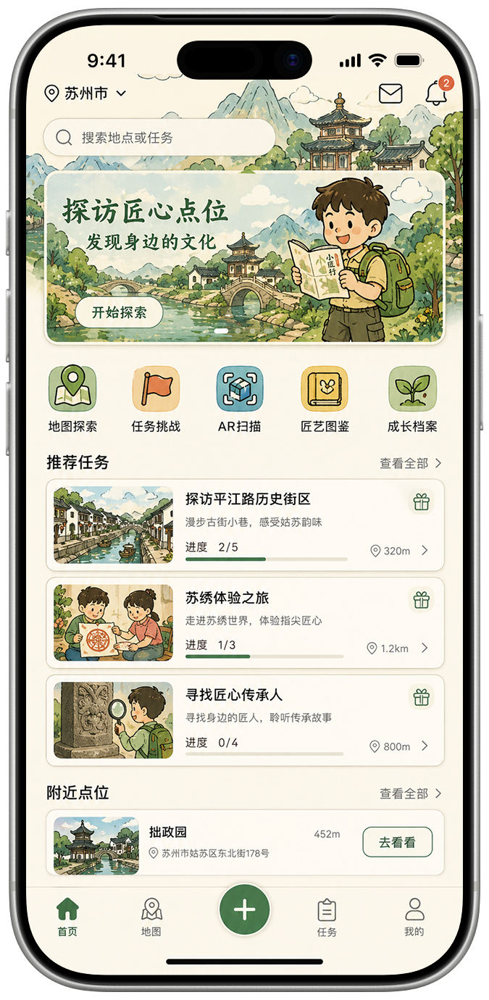
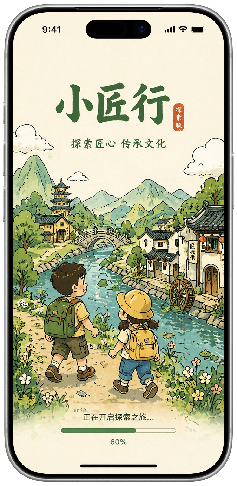
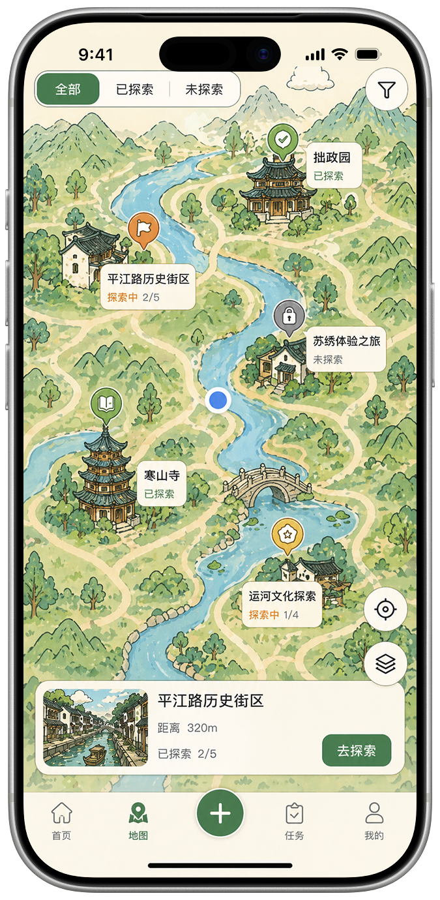
01 / Overview / STAR Context
小匠行面向年轻家庭，将城市非遗资源重构为路线、任务、互动与成长档案，解决亲子出游同质化、儿童文化参与弱、体验成果难沉淀的问题。
围绕年轻父母的路线规划、教育意义和安全感，降低周末出行决策成本。
用故事化任务、挑战和即时奖励，让儿童从被动参观转为主动探索。
发现任务、查看点位、地图前往、实地探索、AR 识别、奖励反馈、成长记录。
首页、地图、任务、图鉴、成长档案与个人中心形成可持续回访路径。
02 / My Role & Impact
我在项目中承担团队负责人 / 产品经理角色，主导从 0 到 1 的产品定义、体验链路推导、视觉方向协同与最终提案交付。
负责项目方向判断、需求优先级定义、信息架构搭建、跨成员协作节奏与最终作品集化表达，确保项目既有产品逻辑，也有完整 UIUX 呈现。
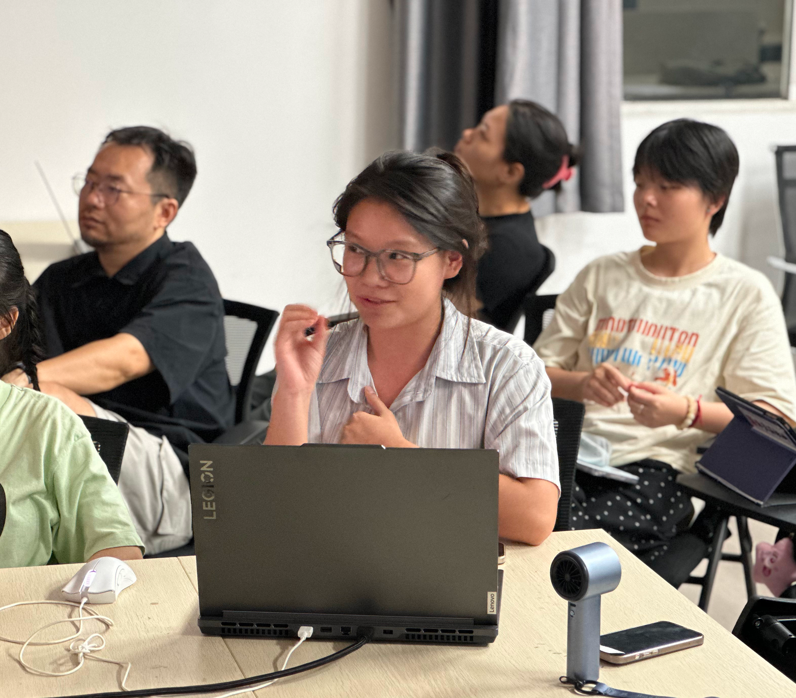
主导全链路市场调研，通过双重用户模型（年轻父母 + 学龄儿童）定义核心产品逻辑，明确“家庭决策者”和“儿童体验者”的不同诉求。
独立推导用户故事版（Storyboard）与全生命周期用户旅程图（User Journey Map），完成产品信息架构（IA）与功能闭环设计。
协调团队推进需求定义、UI/UX 视觉风格（新中式现代人文风）落地，并统筹最终 A3 完整提案展板的输出与闭环。
03 / Discovery & Insights
针对年轻家庭“双重用户”模型进行深度调研：通过清晰的路线规划缓解家长的“遛娃焦虑”，同时用游戏化任务激发儿童的主动参与感。
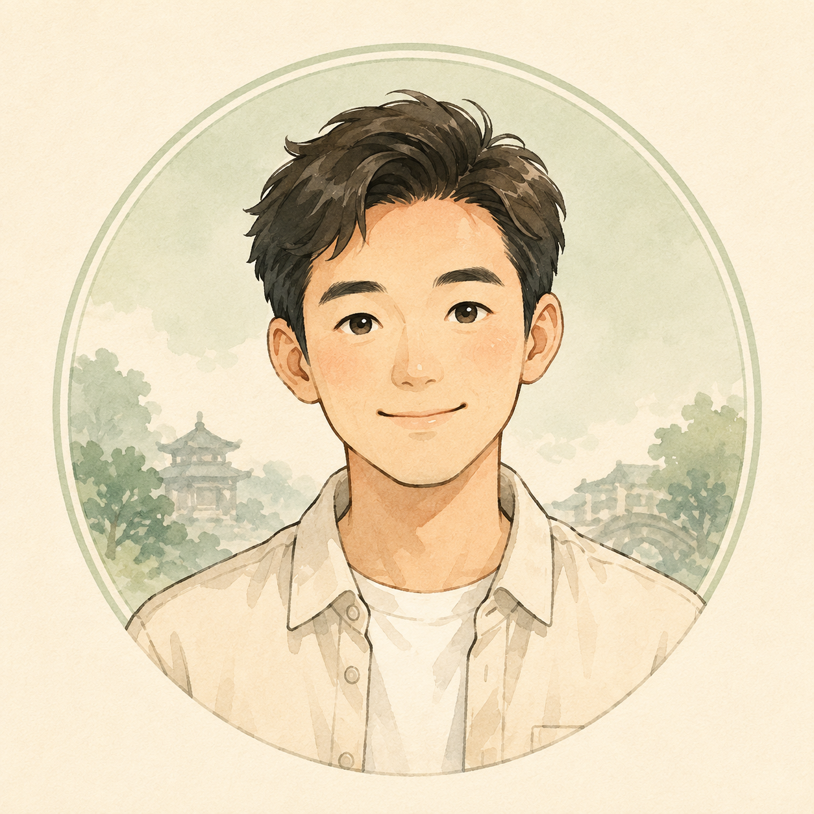
痛点：周末遛娃同质化、缺乏教育意义。
诉求：路线轻松、安排清晰、活动对孩子有成长价值。
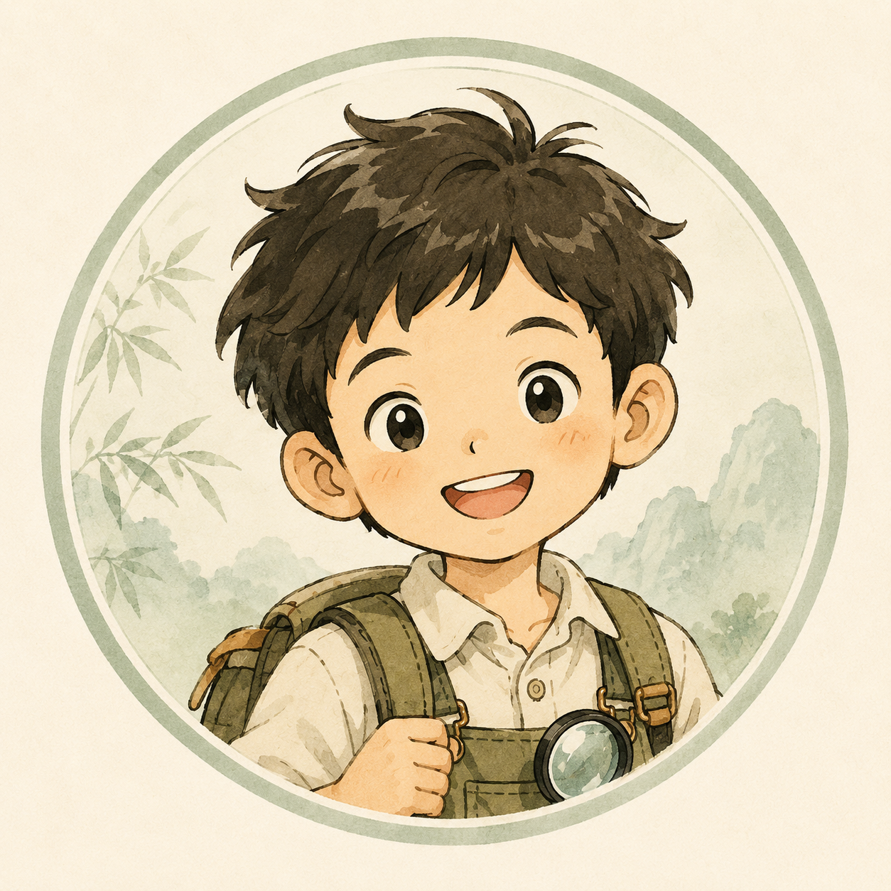
痛点：线上娱乐过度、传统文化断层。
诉求：故事化情节、挑战机制、即时反馈与可收集成果。
梳理“计划出行（首页推荐降低决策成本） → 路线前往（游戏化探索地图） → 实地探索（任务打卡 / AR 交互） → 成果沉淀（图鉴收集 / 成长档案）”的全链路体验。
首页精选推荐任务与点位，帮助家长快速找到适合周末的文化路线。
地图以游戏化探索形式呈现点位状态、距离和探索进度。
通过任务打卡与 AR 交互，让儿童在真实场景中理解非遗故事。
图鉴收集与成长档案记录家庭足迹，形成可复访的长期价值。
04 / Information Architecture
核心架构围绕“探索前、探索中、探索后”三段式体验展开，将家庭的物理出行链路映射为有秩序的产品模块，兼顾家长的规划效率与孩子的持续激励。
发现任务 → 查看点位 → 地图前往 → 实地探索 → AR 识别 → 奖励反馈 → 图鉴与成长记录。
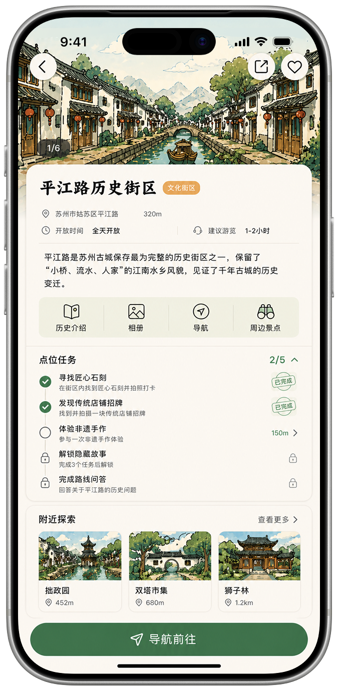
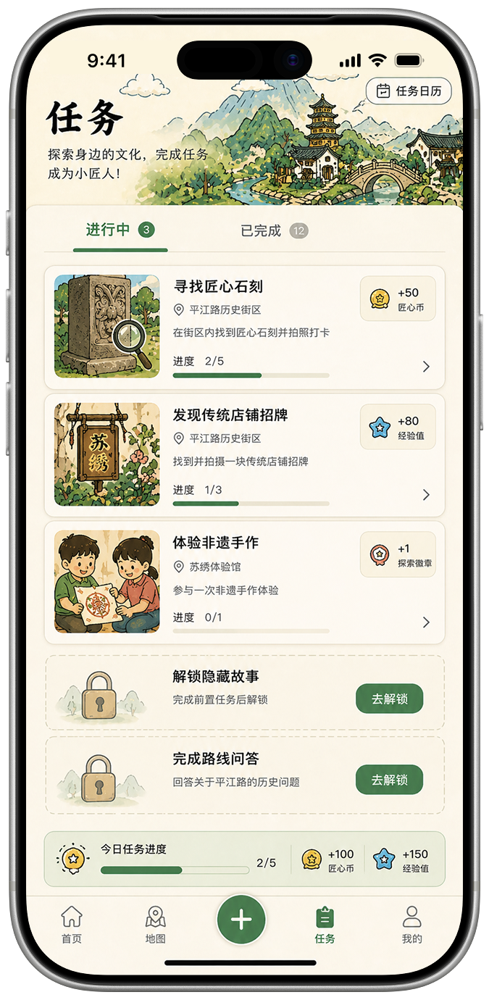
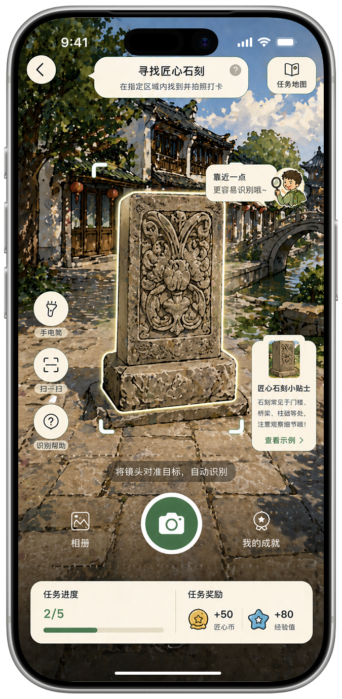
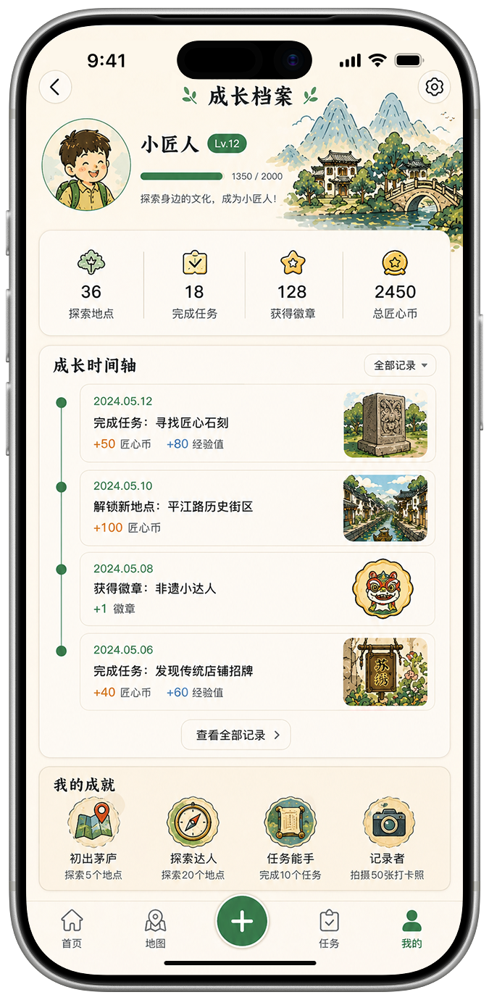
05 / Design Solution
界面不仅是视觉的包装，更是产品功能的直观触达。我们将复杂的业务逻辑转化为易点击、易理解、可反馈的亲子互动界面，让每次操作都带有明确的产品目的。
用青绿色、水墨山水与儿童探索形象建立“文化但不沉重”的第一印象，让非遗主题更亲子、更轻盈。
PM Insights启动页承担情绪预设：用户进入产品前先感受到“城市课堂”的温度，降低传统文化产品常见的距离感。
iOS 原生大圆角卡片、青绿水墨插画与任务入口组合，快速呈现“去哪、做什么、进度如何”。
PM Insights通过精选推荐解决家长的周末出行规划焦虑，把抽象的非遗资源转化成可立即行动的亲子任务。
点位页整合距离、文化故事、任务要求和探索状态，帮助家庭在到达前建立预期。
PM Insights将“看介绍”升级为“准备探索”，让文化内容不只是阅读资料，而是后续任务和现场互动的前置动机。
把枯燥的非遗文化翻译成“寻找匠心石刻”“体验非遗手作”等实地互动任务。
PM Insights通过经验值、探索徽章、匠心币等即时反馈，激发儿童主动探索的内驱力，让家长看见可量化的成长成果。
06 / Exhibition Boards
聚合项目核心交付资产，全面复盘从用户需求洞察、全链路旅程推导、视觉规范建立到产品功能闭环的完整推导过程，验证产品在真实物理场景下的系统化落地可行性。
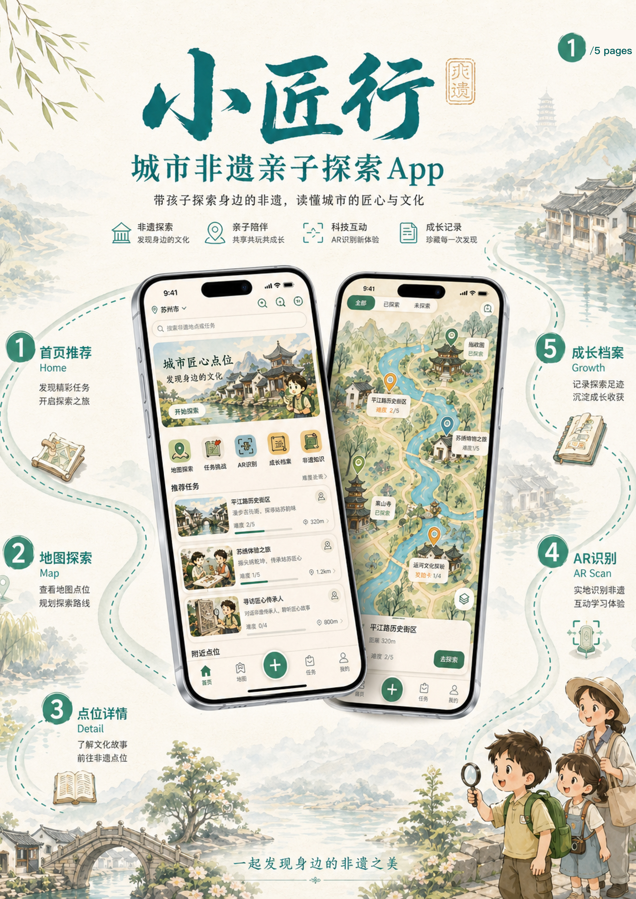
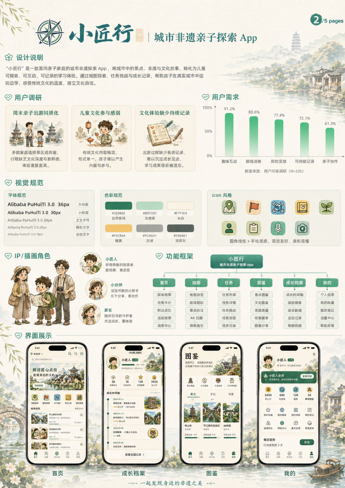
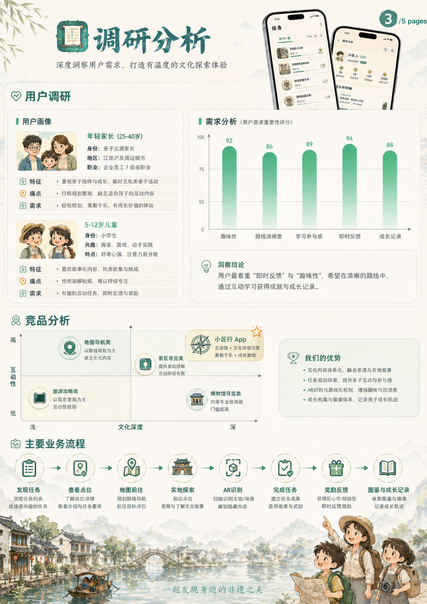
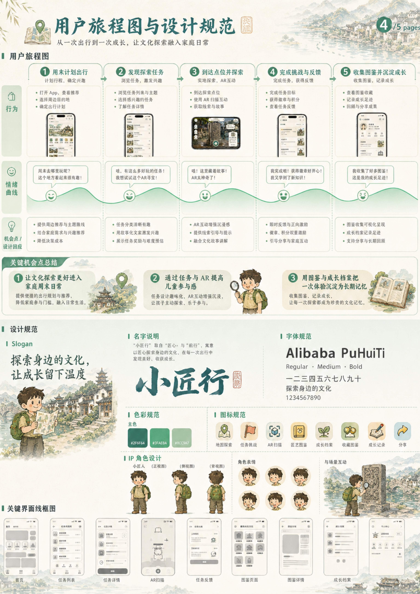
07 / Business & Future Roadmap
突破单次出游工具的局限，通过纵向深耕家庭成长体系、横向链接非遗商家与城市文旅资源，打造可持续运营的亲子文化生态平台。
提供专属亲子路线、精选任务包、图鉴权益与家庭成长报告，形成持续付费场景。
连接手作空间、体验馆和文创店，以任务路线和点位推荐提供流量导流合作。
将本地文化资源转化为研学路线，帮助城市文化以更轻量的产品方式触达家庭用户。
未来规划 AI 智能路线推荐、多城市点位库、家庭成长体系与非遗商家平台化能力。
根据儿童年龄、出行时长、地理位置、兴趣标签和历史探索记录，生成更个性化的亲子非遗路线。
从单城样板扩展到多城市非遗点位库，让产品从作品概念走向可规模化运营的文化服务平台。
08 / Case Study Summary
打造有温度的亲子研学体验，把传统非遗变成家庭触手可及的互动日常。